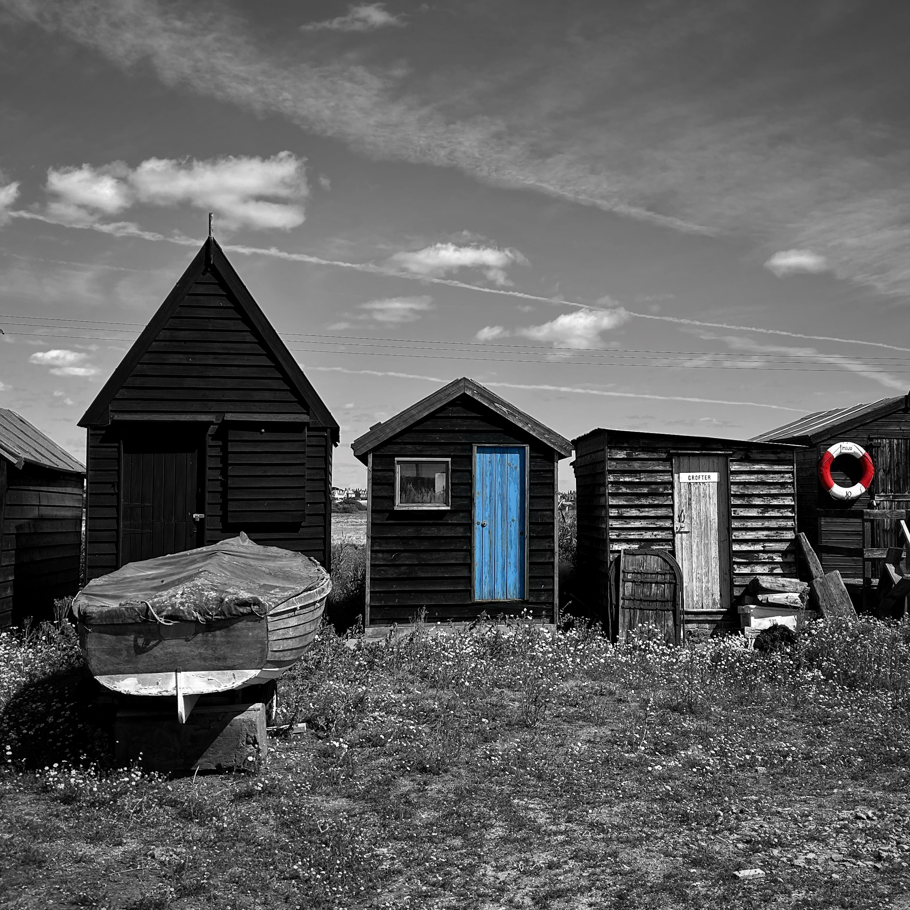
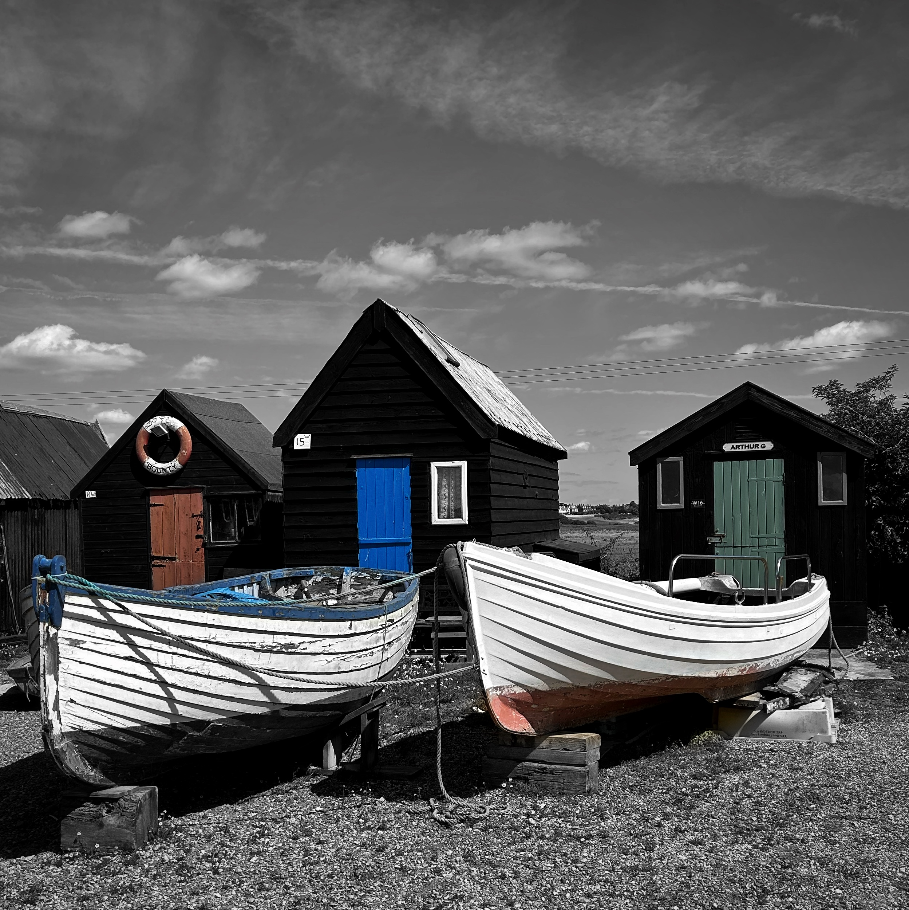
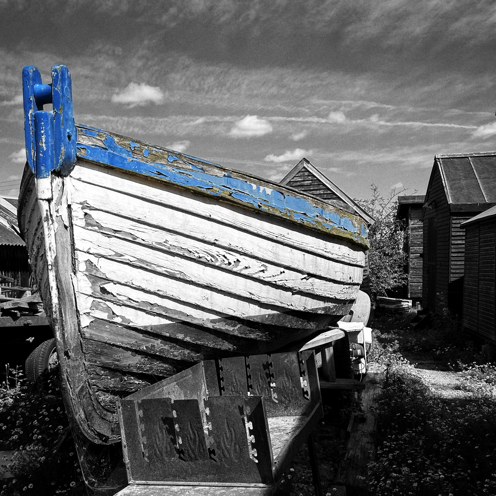
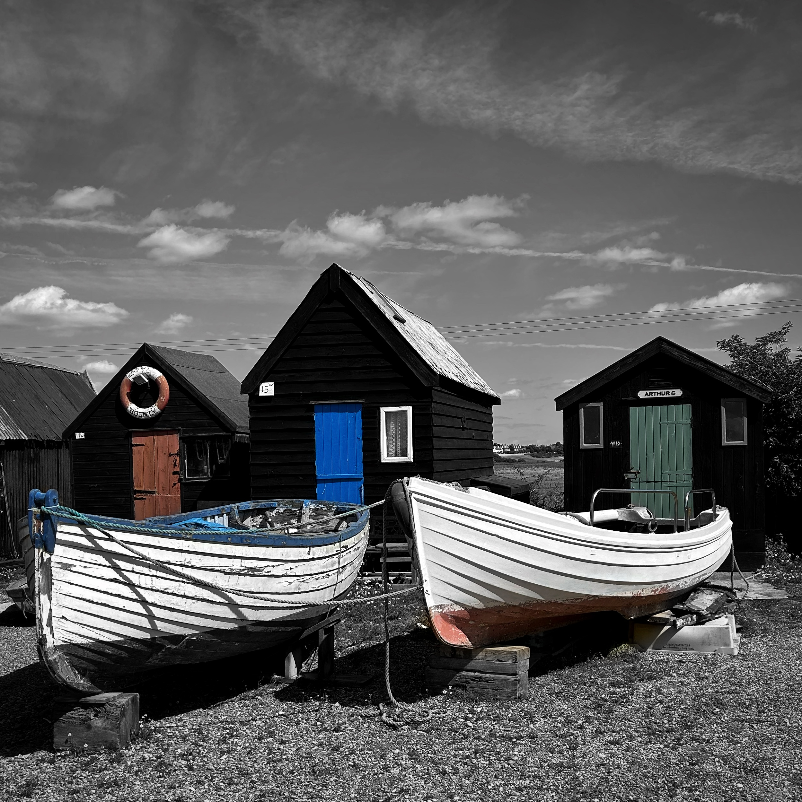
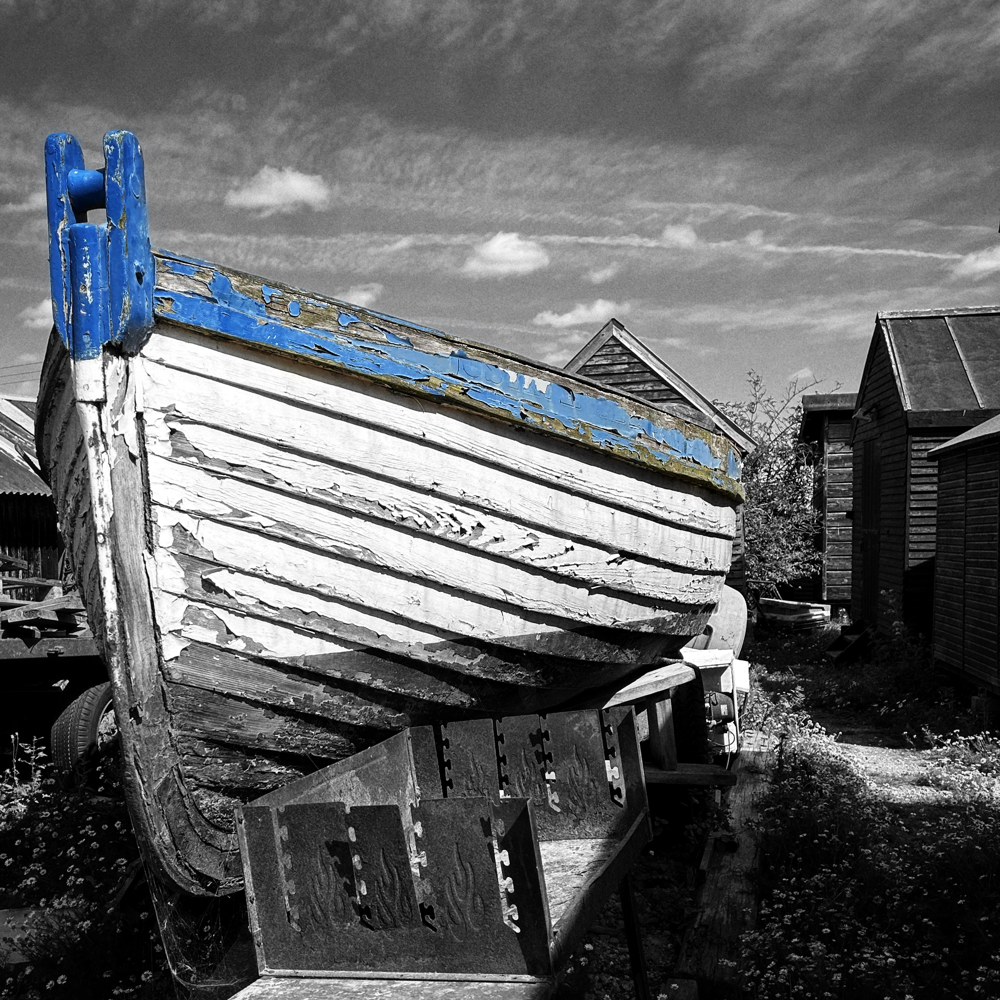
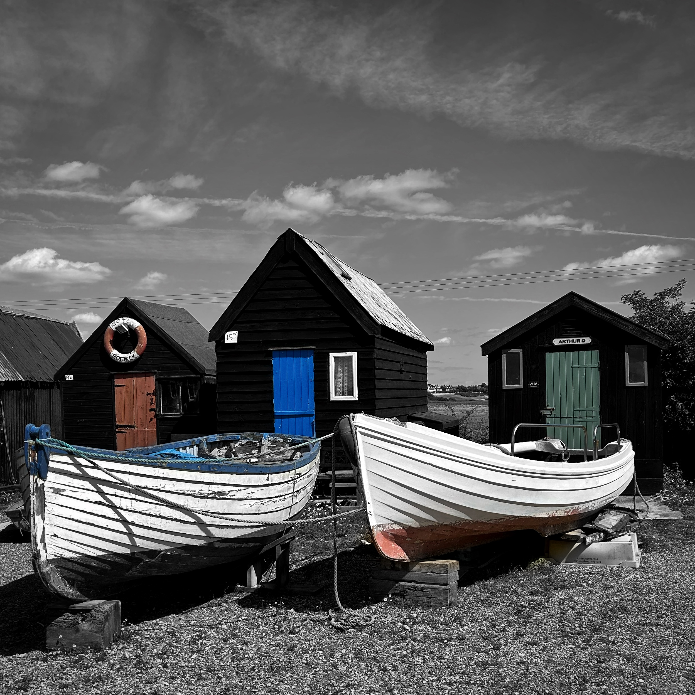
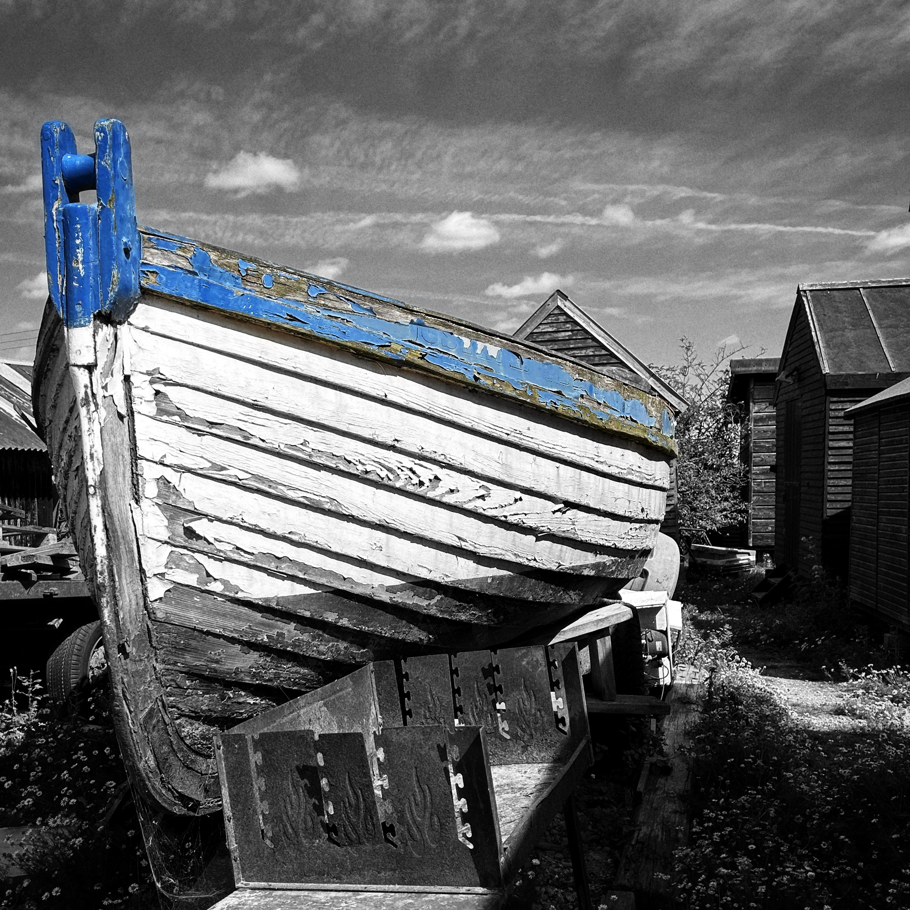

Southwold Harbour Photography
During my trip to Southwold harbour, I aimed to capture the charm of the old boats and huts in black and white. After exploring and photographing, I enjoyed a delightful lunch at Le Roc restaurant.

 




